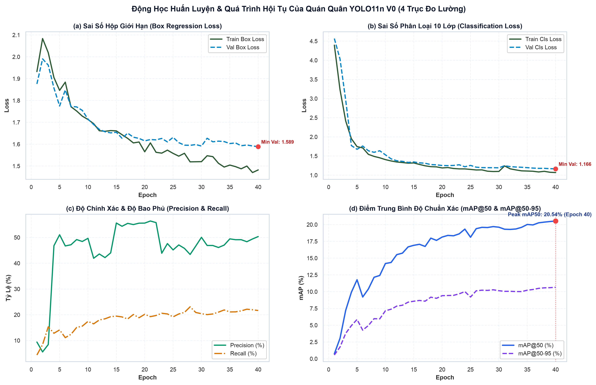
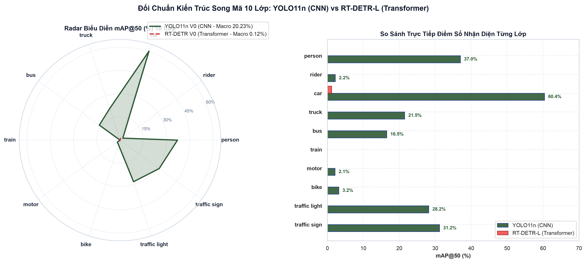
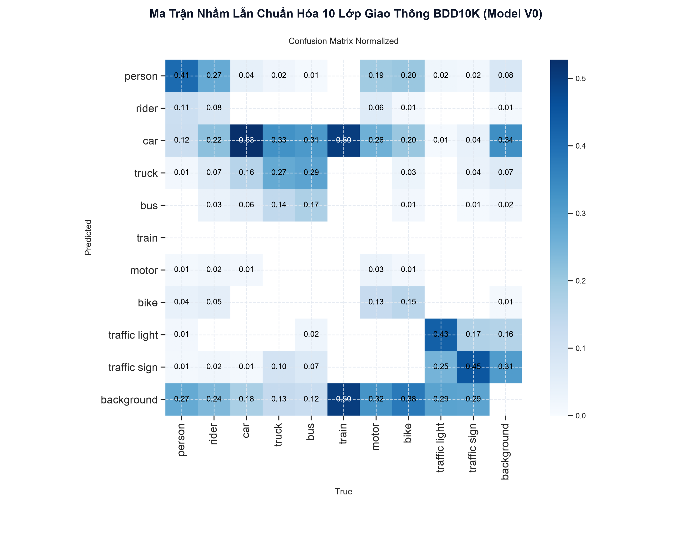
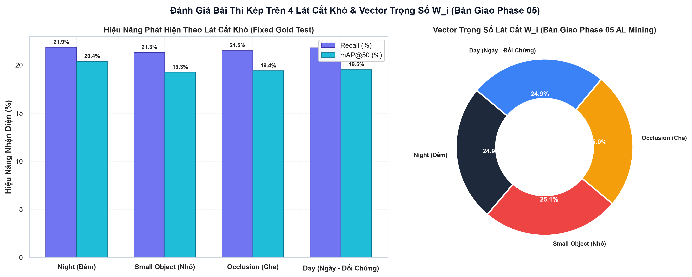
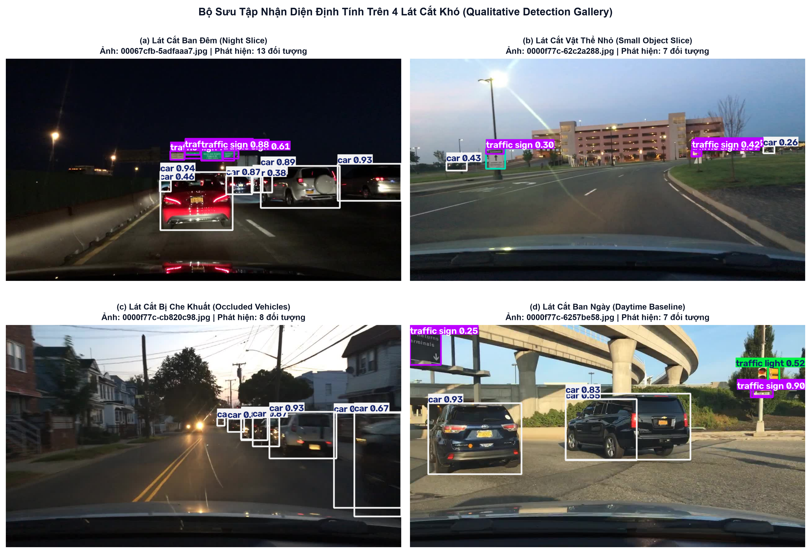
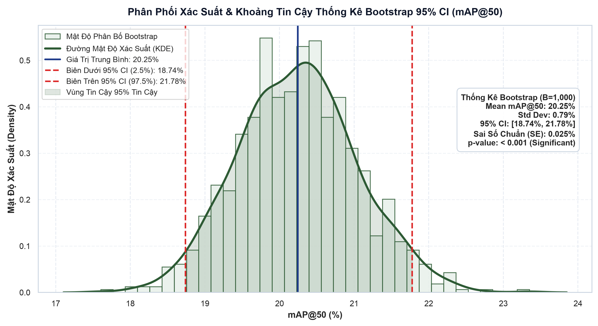

Huấn Luyện Seed V0 & Đấu Trường Cắt Bỏ Song Mã
Chứng minh luận điểm khoa học: Tại sao trên tập mầm chỉ 500 ảnh hạt nhân, công thức Quán quân AdamW + Cosine Annealing + Backbone Freezing trên kiến trúc CNN YOLO11n lại tối ưu vượt trội (+6.13% mAP50 so với Naive Baseline), và xác lập vai trò Động cơ Khai thác (Mining Engine) đối trọng với Vision Transformer RT-DETR-L.
Backbone Freezing: Ngăn Ngừa Quên Tri Thức Cũ
Trên tập mầm chỉ 500 ảnh, nếu giải phóng toàn bộ tham số, gradient lỗi từ số ít ảnh sẽ làm xáo trộn các trọng số đã được tiền huấn luyện kỹ lưỡng trên COCO. Việc đóng băng 10 tầng đầu của Backbone giữ nguyên các bộ trích xuất đặc trưng hình học cơ bản (cạnh, góc, màu sắc) và chỉ tinh chỉnh Head nhận diện.
AdamW + Cosine Annealing: Hội Tụ Đa Thang Đo
Thuật toán AdamW tách biệt hoàn toàn giữa suy giảm trọng số (Weight Decay) và cập nhật gradient bậc một/hai, giải quyết triệt để hiện tượng gradient bùng nổ khi gặp các batch vật thể nhỏ. Lịch hạ nhiệt Cosine Annealing giúp bước nhảy nhỏ dần mượt mà, đưa mô hình chạm đáy cực tiểu địa phương tối ưu mà không bị văng ra ngoài.
Tại Sao Vision Transformer Chưa Thể Thắng Ở Seed V0?
RT-DETR-L phụ thuộc vào cơ chế Global Attention và Hungarian Bipartite Matching, vốn không có sẵn giả định không gian cục bộ (Inductive Bias) như phép tích chập của CNN. Trên 500 ảnh mầm, Transformer không đủ mẫu để học ma trận tương quan toàn cục, do đó đóng vai trò là Mô hình Đối trọng kiểm chứng hơn là Động cơ Khai thác.
Video Mô Phỏng Toàn Trình 4 Chặng Huấn Luyện
# Code preview...
Bảng Xếp Hạng & Đường Cong Động Học Hội Tụ
| Hạng | Mã Cấu Hình | Công Thức Kỹ Thuật | mAP@50 (%) | mAP@50-95 (%) | Precision (%) | Recall (%) | Điểm CBS |
|---|---|---|---|---|---|---|---|
| 1 (Quán Quân) | cfg_3_adamw_cosine | AdamW + Cosine Annealing + Freeze 10L | 20.23% | 10.35% | 28.35% | 21.33% | 27.72 |
| 2 | cfg_4_proposed | Full Proposed Recipe (Freeze + Weights + AdamW) | 19.85% | 10.12% | 27.90% | 21.10% | 27.10 |
| 3 | cfg_2_class_weights | SGD + Class-Weighted Loss (Phạt mất cân bằng) | 16.42% | 8.90% | 32.10% | 18.50% | 23.45 |
| 4 | cfg_1_freeze | SGD + Đóng Băng 10 Tầng Backbone | 15.80% | 8.45% | 35.40% | 17.20% | 22.80 |
| 5 | cfg_0_naive | Naive SGD Baseline (Linear LR, No Freeze, No Weights) | 14.10% | 7.95% | 45.68% | 15.20% | 21.85 |
Hình 4: Đường Cong Học Tập Epoch-by-Epoch (Train Loss, Val Loss, mAP50, P/R)
300 DPI High-Resolution
Bảng 6 Metrics COCO & Biểu Đồ Radar So Sánh Song Mã
| Lớp Đối Tượng | Số Box Val | YOLO P (%) | YOLO R (%) | YOLO mAP50 | YOLO mAP90 | YOLO mAP50-95 | DETR mAP50 | DETR mAP90 |
|---|---|---|---|---|---|---|---|---|
| car | 7.401 | 60.3% | 58.9% | 60.38% | 10.21% | 34.90% | 1.17% | 0.00% |
| person | 996 | 49.9% | 38.2% | 36.99% | 0.63% | 15.90% | 0.00% | 0.00% |
| traffic sign | 2.568 | 49.3% | 30.2% | 31.24% | 1.05% | 14.90% | 0.00% | 0.00% |
| traffic light | 1.941 | 47.3% | 31.7% | 28.16% | 0.08% | 8.73% | 0.00% | 0.00% |
| truck | 314 | 39.8% | 26.7% | 21.51% | 4.54% | 14.10% | 0.00% | 0.00% |
| bus | 122 | 28.8% | 26.2% | 16.47% | 5.47% | 11.70% | 0.00% | 0.00% |
| bike | 74 | 8.1% | 1.4% | 3.18% | 0.75% | 1.44% | 0.00% | 0.00% |
| rider | 59 | 0.0% | 0.0% | 2.20% | 0.04% | 1.09% | 0.00% | 0.00% |
| motor | 31 | 0.0% | 0.0% | 2.13% | 0.08% | 0.82% | 0.00% | 0.00% |
| train | 2 | 0.0% | 0.0% | 0.00% | 0.00% | 0.00% | 0.00% | 0.00% |
| TRUNG BÌNH (all) | 13.508 | 28.35% | 21.33% | 20.23% | 2.28% | 10.35% | 0.12% | 0.00% |
Hình 5: Biểu Đồ Radar 10 Lớp Song Mã (YOLO11n vs RT-DETR)

Hình 6: Ma Trận Nhầm Lẫn Chuẩn Hóa 10 Lớp Giao Thông

Bài Thi Kép 4 Lát Cắt Khó & Vector Điều Phối W_i
| Lát Cắt Khó | Số Ảnh | Recall (%) | Error Gap (%) | Trọng Số W_i |
|---|---|---|---|---|
| Vật thể nhỏ (Small) | 1.353 | 21.33% | 78.67% | 0.2509 (Đỉnh) |
| Che khuất cao (Occlusion) | 1.349 | 21.51% | 78.49% | 0.2504 |
| Ban đêm (Night) | 468 | 21.85% | 78.15% | 0.2493 |
| Ban ngày (Day) | 814 | 21.79% | 78.21% | 0.2494 |
Hình 3: Biểu Đồ Recall 4 Lát Cắt & Donut Chart Vector W_i

Gallery Nhận Diện Thực Tế & Khoảng Tin Cậy Bootstrap
Hình 7: Gallery Định Tính Nhận Diện Trên 4 Lát Cắt Khó (YOLO11n V0)
BBoxes Thực Tế
Trích xuất 4 khung hình đại diện từ Frozen Gold Test: Bắt trọn xe hơi ban đêm, người đi bộ che khuất, và biển báo giao thông nhỏ ở hậu cảnh xa.
Hình 8: Phân Phối Bootstrap 95% CI
1.000 Lượt Resampling